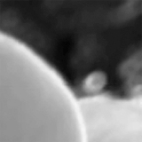
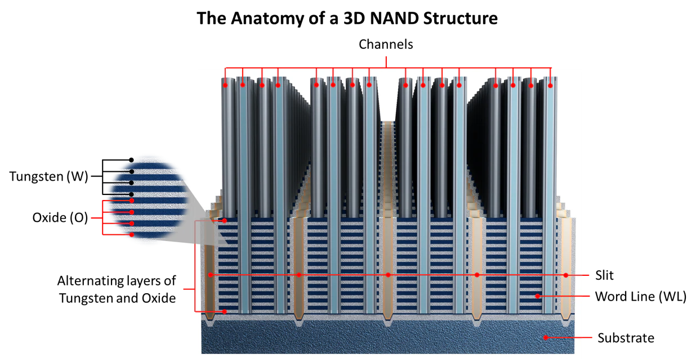

|
Byeongju Woo I am a research officer at ADD, the Korean counterpart to the U.S. DARPA. I completed my bachelor's degree (Summa Cum Laude) in Computer Science and Engineering at POSTECH. |
{kind=link}
Research InterestsI'm interested in computer vision, deep learning, generative AI, and image processing. Most of my research is about inferring the physical world (shape, motion, color, light, etc) from images, usually with radiance fields. |
Publications |

|
Textual Query-Driven Mask Transformer for Domain Generalized Segmentation
Byeongju Woo*, , Sunghwan Kim, Daehwan Kim, Hosung Kim ECCV, 2024 project page / video / arXiv Neural fields let you recover editable UV mappings for the challenging geometries produced by NeRF-like models. |
|
 |
Learning Single Camera Depth Estimation using Dual-Pixels
Rahul Garg, Neal Wadhwa, Sameer Ansari, Jonathan T. Barron ICCV, 2019 (Oral Presentation) code / bibtex Considering the optics of dual-pixel image sensors improves monocular depth estimation techniques. |
Projects |
|
 |
Object Detection for 3D NAND Flash Failure Detection
SK Hynix, department of DS Algorithm, 2021-2021 We developed an automated algorithm to pre-check for rejects in 3D NAND FLASH manufacturing. We developed a domain-specific object detection model with a small number of industrial data. |
Award and Scholarship
|
|
|